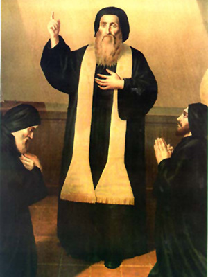

✦ CLOUD OF WITNESSES ✦
Shining lights of holiness who have illumined our tradition across the centuries
HEAVENLY PATRONS
The Maronite Church has been blessed with extraordinary saints whose lives continue to inspire and intercede for the faithful.

SAINT MARON
c. 350 – c. 410 AD
Hermit Monk · Father of the Maronite Church
Saint Maron was a Syrian hermit monk who lived in the hills near the Orontes River in the late 4th and early 5th centuries. Renowned for his austere penances and miraculous gifts of healing, he attracted numerous disciples who formed the nucleus of what would become the Maronite monastic community.
His disciples built the first Maronite monastery on Mount Lebanon after the saint's repose, preserving his teachings and expanding the community that bears his name. The entire Maronite Church — spanning millions of faithful worldwide — traces its spiritual lineage to this humble Syrian ascetic.
"From his cell on the hills of Syria, Saint Maron enkindled a flame that crossed the mountains of Lebanon and reached to the ends of the earth."
Monk & Hermit · Patron of Lebanon
Saint Charbel Makhlouf (1828–1898) is the most beloved Maronite saint of modern times. Born Youssef Antoun Makhlouf in the Lebanese village of Beka'a Kafra, he entered the Maronite Order and eventually lived as a hermit at the Hermitage of Saints Peter and Paul near Annaya.
After his death on Christmas Eve 1898, miraculous phenomena were reported at his tomb — supernatural light and the incorruption of his body. He was canonized by Pope Paul VI in 1977, and reports of miracles through his intercession continue to this day from all corners of the world.
"I am a sinner who has had the grace of God. Whatever good I have done has been with His help."
Nun · Mystic · Patron of the Sick
Saint Rafqa, born Boutrossiyeh Ar-Rayes in 1832 in Himlaya, Lebanon, is known as the mystical bride of Christ who embraced suffering with extraordinary joy and love. After years of religious life, she prayed to share in the sufferings of Christ, and subsequently endured decades of blindness and painful illness — offering it all in union with her Lord.
Canonized by Pope John Paul II in 2001, Saint Rafqa is a beloved intercessor for those who suffer, and her witness to redemptive suffering continues to inspire countless faithful.
"If this is your will, O Lord, let it be done. Give me strength and I will bear this suffering for love of You."
BLESSED AND VENERABLE
A luminous cloud of witnesses who walked the path of holiness in the Maronite tradition.
Lebanese monk, teacher, and mystic. Canonized 2004. Known for deep Eucharistic devotion and care for his students.
Feast: December 14
Lebanese Maronite priest beatified in 2008, known for his priestly zeal and care for the poor of his community.
Feast: October 1
Young Lebanese Maronite monk beatified in 1998, who lived a short but deeply contemplative life of prayer and penance.
Feast: August 10
Eight Franciscan friars and three Maronite laymen who were martyred in Damascus in 1860 for their Christian faith.
Feast: July 10
INTERCESSION
O Saint Maron, faithful servant of God and father of our Church, intercede for us before the throne of grace. May your example of piety, penance, and prayer inspire us to walk ever closer to our Lord. Pray for the Maronite faithful throughout the world, and especially for our community in British Columbia. Amen.
MARONITE PRAYER